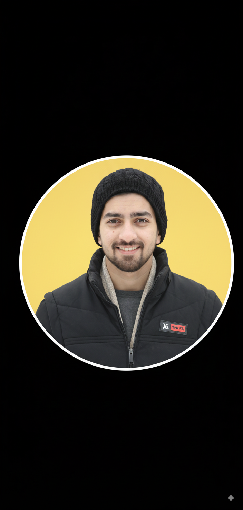

MeetingMirror AI Platform (In Progress)
Designing a meeting analysis platform featuring AI-generated insights from transcripts, interactive dashboards, user authentication, and Zoom integration. Backend built with FastAPI.

I build intelligent, scalable AI products that solve real-world business problems—transforming ideas into fully functional automated solutions.
I am an AI Engineer and Freelancer with over a 2+years of hands-on experience in building end-to-end intelligent systems. My work combines strong technical expertise with a results-driven mindset—focusing on clean, maintainable code to deliver practical AI tools spanning from workflow automation bots to locally-hosted, privacy-first LLMs.
Designing a meeting analysis platform featuring AI-generated insights from transcripts, interactive dashboards, user authentication, and Zoom integration. Backend built with FastAPI.
Leveraged Google's Gemini LLM to interpret natural language questions and reliably translate them into precise SQL database queries.
Innovative approach to Retrieval-Augmented Generation that bypasses traditional vector databases, optimizing lightweight retrieval workflows.
Full implementation pipeline incorporating Pinecone vector stores and Langchain to deliver a contextually aware business assistant.
Focused backend scripts to scrape, process website data, and intelligently extract metrics from messy invoice documents via LLMs.
Exploration of Corrective RAG methodologies via Jupyter notebooks to enhance accuracy and context-awareness in LLM chatbots.
Python-based object detection system. Trained and validated on custom datasets to extract frames and accurately recognize license plates with an automated SQL data store.
Data science and machine learning analysis applied to blood spectroscopy data to predict indicators and unearth hidden biological patterns.
A workflow automation system built to eliminate manual accounting data entry. Supports multi-format invoices and features robust Google Sheets integration.
An interactive, responsive AI voice agent implementing VAPI for seamless speech-based interactions and local task management.
Custom multi-step automation workflow constructed using n8n. Acts as a personal assistant for scheduled actions and notification systems.
Production-ready backend architecture components leveraging FastAPI to serve machine learning models and handle user authentication safely.
I focus on building production-grade AI systems, multi-agent architectures, and automated businesses. If you have a project in mind or need freelance development, let's talk!